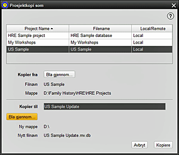

Denne skjermen lar deg kopiere et HRE-prosjekt fra en hvilken som helst kilde til et hvilket som helst valgt reisemål. Den kan deretter åpnes etter behov. Standard kopiplassering kan angis i Verktøy > Innstillinger > Bruker > Filplasseringer. 1. Du kan velge et prosjekt fra listen over kjente prosjekter eller bruke BLIKK for å åpne File Chooser-vinduet for å finne en HRE-fil på denne datamaskinen, på en ekstern kilde eller en flyttbar stasjon. Velg ønsket prosjekt 2. I KOPIER TIL gir det nye prosjektet et navn 3. Bruk igjen Filvelger til å BLIKKE for prosjektdestinasjonsmappen og tildel det nye filnavnet 4. Trykk på KOPI for at prosessen skal finne sted 5. Dette prosjektet kan nå åpnes på denne datamaskinen eller på en annen datamaskin. |
|
Relaterte Temaer |